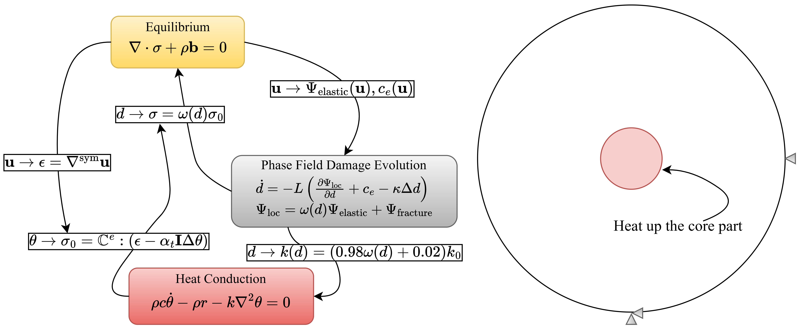

🔥 2D Thermal-Induced Fracture Simulation
🚀 Granite Disk Thermal-Induced Fracture
A benchmark example is conducted on a 2D plane strain granite disk.
The outer radius is \( R_{\text{out}} = 1 \) m, and the inner heated circular region has a radius of \( R_{\text{in}} = 0.2 \) m.
The inner region has higher thermal expansion conefficient \( \alpha_{t(\text{in})} = 4.3e-5\)m/m-C than outer region \( \alpha_{t(\text{out})} = 3.5e-5\)m/m-C, and cracks are not allowed to happend in inner part!
The model solves three governing equations: phase field fracture (PF), mechanical equilibrium, and heat conduction equation. Their interactions are summarized as:
🔠Equilibrium ↔ Heat Conduction Equation:
• \( \mathbf{u} \) contributes to total strain \( \epsilon = \nabla^{\text{sym}}\mathbf{u} \).
• Temperature \( \theta \) is used to compute the trial undamaged stress \( \sigma_0 \), which is passed into the phase-field model.
🔠Heat Conduction Equation ↔ Phase Field:
• The damage variable \( d \) affects thermal conductivity \( k \), which is assumed to drop to 2% of the intact value when fully damaged.
• In some models, the energy release rate \( G_c \) depends on \( d \) or \( \theta \), but that’s typically for high-temperature scenarios — not considered here.
🔠Equilibrium ↔ Phase Field:
• \( \mathbf{u} \) feeds into phase-field through the elastic energy \( \Psi_{\text{elastic}} \) and an additional driving force term \( c_e \).
• The damage field \( d \) then degrades \( \sigma_0 \) to compute the final stress \( \sigma \).
🚀 Multi-Physics System and Boundary Conditions

🔑 Key Highlights
✅ Implementation of coupling system by loosely coupled setting.
✅ Manually established interaction between thermal and phase field systems.
âš ï¸ Note 1: Any physical system is associated with a corresponding energy contribution, which can enter the phase-field fracture governing equation as part of the local driving force term. This is often written as: \[ \frac{\partial \Psi_{\text{loc}}}{\partial d} = \frac{\partial \Psi_{\text{elastic}}}{\partial d} + \frac{\partial \Psi_{\text{fracture}}}{\partial d} + \frac{\partial \Psi_{\text{other}}}{\partial d} \] where \(\Psi_{\text{other}}\) may represent additional physics such as thermal energy (\(\Psi_{\text{thermal}}\)) or fluid energy (\(\Psi_{\text{fluid}}\)) in porous flow systems. However, in a physical sense, thermally induced fracture arises primarily from the thermal stress, not from the temperature itself. As a result, it is common practice to exclude \(\Psi_{\text{thermal}}\) from the governing phase-field equation. Instead, temperature-dependent material parameters (e.g., conductivity in the present case) are coupled with the damage variable \(d\), capturing the thermal effects indirectly but effectively.
âš ï¸ Note 2: While using loosely coupled systems may compromise accuracy, extra care on convergence criteria is required. In this case, the nonlinear residual tolerance is set to \( 1 \times 10^{-7} \).
🚀 Primary Variables and Material Response